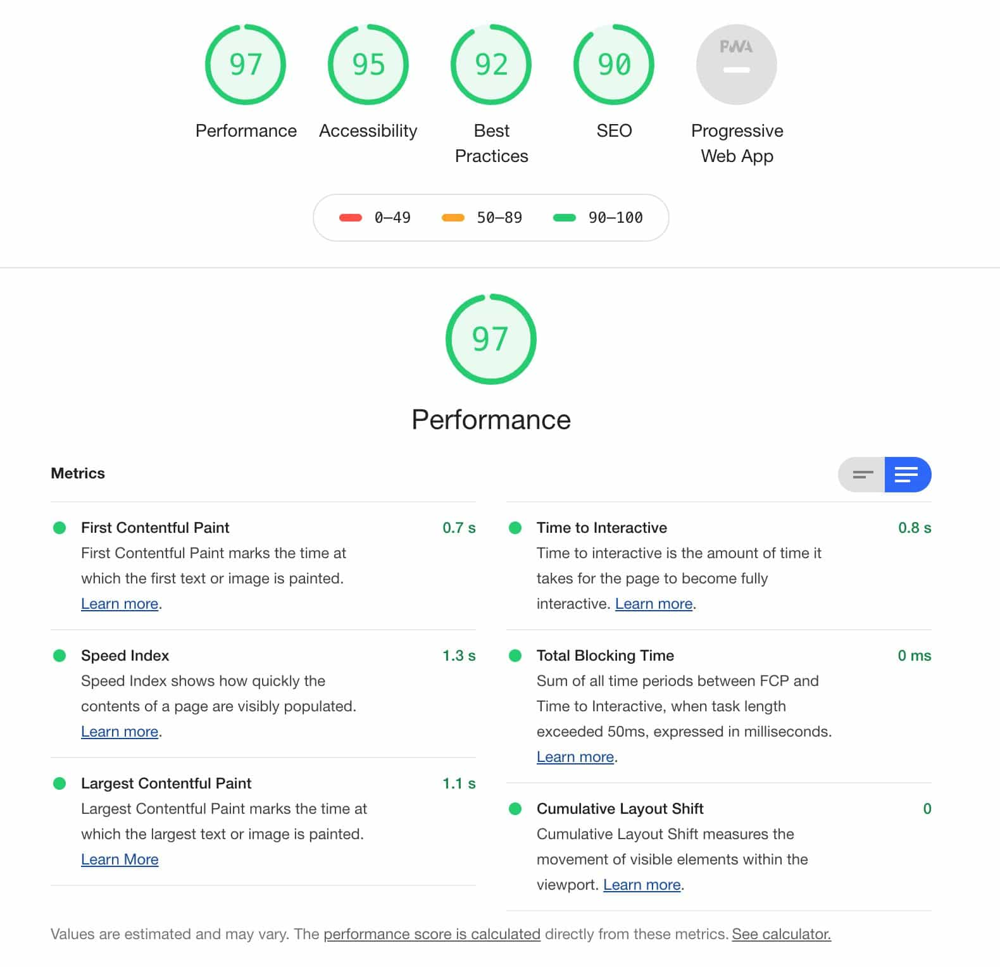
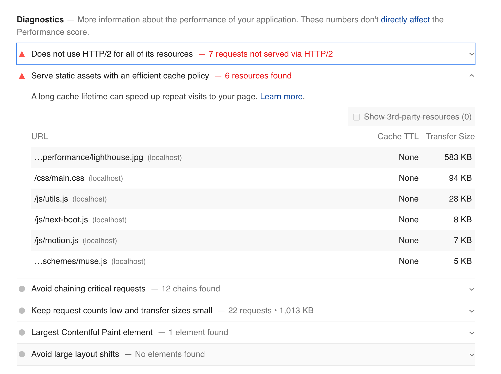

性能优化
性能优化是把双刃剑，有好的一面也有坏的一面。好的一面就是能提升网站性能，坏的一面就是配置麻烦，或者要遵守的规则太多。
网络相关
DNS 预解析
DNS 解析也是需要时间的，可以通过预解析的方式来预先获得域名所对应的 IP。
1 | <link rel="dns-prefetch" href="//yuchengkai.cn"> |
缓存
缓存对于前端性能优化来说是个很重要的点，良好的缓存策略可以降低资源的重复加载提高网页的整体加载速度。
通常浏览器缓存策略分为两种：强缓存和协商缓存。
强缓存
实现强缓存可以通过两种响应头实现：Expires 和 Cache-Control 。强缓存表示在缓存期间不需要请求，state code 为 200
Expires: Wed, 22 Oct 2018 08:41:00 GMT
Expires 是 HTTP / 1.0 的产物，表示资源会在 Wed, 22 Oct 2018 08:41:00 GMT 后过期，需要再次请求。并且 Expires 受限于本地时间，如果修改了本地时间，可能会造成缓存失效。
Cache-control: max-age=30
Cache-Control 出现于 HTTP / 1.1，优先级高于 Expires 。该属性表示资源会在 30 秒后过期，需要再次请求。
协商缓存
如果缓存过期了，我们就可以使用协商缓存来解决问题。协商缓存需要请求，如果缓存有效会返回 304。
协商缓存需要客户端和服务端共同实现，和强缓存一样，也有两种实现方式。
Last-Modified 和 If-Modified-Since
Last-Modified 表示本地文件最后修改日期，If-Modified-Since 会将 Last-Modified 的值发送给服务器，询问服务器在该日期后资源是否有更新，有更新的话就会将新的资源发送回来。
但是如果在本地打开缓存文件，就会造成 Last-Modified 被修改，所以在 HTTP / 1.1 出现了 ETag 。
ETag 和 If-None-Match
ETag 类似于文件指纹，If-None-Match 会将当前 ETag 发送给服务器，询问该资源 ETag 是否变动，有变动的话就将新的资源发送回来。并且 ETag 优先级比 Last-Modified 高。
选择合适的缓存策略
对于大部分的场景都可以使用强缓存配合协商缓存解决，但是在一些特殊的地方可能需要选择特殊的缓存策略
- 对于某些不需要缓存的资源，可以使用
Cache-control: no-store，表示该资源不需要缓存 - 对于频繁变动的资源，可以使用
Cache-Control: no-cache并配合ETag使用，表示该资源已被缓存，但是每次都会发送请求询问资源是否更新。 - 对于代码文件来说，通常使用
Cache-Control: max-age=31536000并配合策略缓存使用，然后对文件进行指纹处理，一旦文件名变动就会立刻下载新的文件。 - 可是同时设置多个值，使用 “,” 分开
Cache-Control可以使用的更多值，可以查看MDNCache-Control
使用 HTTP / 2.0
因为浏览器会有并发请求限制，在 HTTP / 1.1 时代，每个请求都需要建立和断开，消耗了好几个 RTT 时间，并且由于 TCP 慢启动的原因，加载体积大的文件会需要更多的时间。
在 HTTP / 2.0 中引入了多路复用，能够让多个请求使用同一个 TCP 链接，极大的加快了网页的加载速度。并且还支持 Header 压缩，进一步的减少了请求的数据大小。
除了HTTP/2.0, HTTP/3.0的规范已在自定中， HTTP/3.0基于Google的 QUIC 技术，QUIC是基于UDP的
预加载
在开发中，可能会遇到这样的情况。有些资源不需要马上用到，但是希望尽早获取，这时候就可以使用预加载。
预加载其实是声明式的 fetch ，强制浏览器请求资源，并且不会阻塞 onload 事件，可以使用以下代码开启预加载
1 | <link rel="preload" href="http://example.com"> |
预加载可以一定程度上降低首屏的加载时间，因为可以将一些不影响首屏但重要的文件延后加载，唯一缺点就是兼容性不好。
预渲染
可以通过预渲染将下载的文件预先在后台渲染，可以使用以下代码开启预渲染， 预渲染一般需要使用服务端渲染
1 | <link rel="prerender" href="http://example.com"> |
另外, 浏览器对同一个域名的请求有并发限制， Chrome的限制应该是5个， 也就是同时对一个域名的请求最多有5个请求链接， 再多的就需要排队， 如果业务中确实需要同时请求很多资源， 则可以将资源分散在不同的域名下。可以加快网络请求。
优化渲染过程
懒执行
懒执行就是将某些逻辑延迟到使用时再计算。该技术可以用于首屏优化，对于某些耗时逻辑并不需要在首屏就使用的，就可以使用懒执行。懒执行需要唤醒，一般可以通过定时器或者事件的调用来唤醒。
懒加载
懒加载就是将不关键的资源延后加载。
懒加载的原理就是只加载自定义区域（通常是可视区域，但也可以是即将进入可视区域）内需要加载的东西。对于图片来说，先设置图片标签的 src 属性为一张占位图，将真实的图片资源放入一个自定义属性中，当进入自定义区域时，就将自定义属性替换为 src 属性，这样图片就会去下载资源，实现了图片懒加载。
懒加载不仅可以用于图片，也可以使用在别的资源上。比如进入可视区域才开始播放视频等等。
文件优化
图片优化
计算图片大小
对于一张 100 * 100 像素的图片来说，图像上有 10000 个像素点，如果每个像素的值是 RGBA 存储的话，那么也就是说每个像素有 4 个通道，每个通道 1 个字节（8 位 = 1个字节），所以该图片大小大概为 39KB（10000 * 1 * 4 / 1024）。
但是在实际项目中，一张图片可能并不需要使用那么多颜色去显示，我们可以通过减少每个像素的调色板来相应缩小图片的大小。
了解了如何计算图片大小的知识，那么对于如何优化图片，想必大家已经有 2 个思路了：
- 减少像素点
- 减少每个像素点能够显示的颜色
图片加载优化
- 不用图片。很多时候会使用到很多修饰类图片，其实这类修饰图片完全可以用 CSS 去代替。
- 对于移动端来说，屏幕宽度就那么点，完全没有必要去加载原图浪费带宽。一般图片都用 CDN 加载，可以计算出适配屏幕的宽度，然后去请求相应裁剪好的图片。
- 小图使用 base64 格式
- 将多个图标文件整合到一张图片中（雪碧图）
- 选择正确的图片格式：
- 对于能够显示 WebP 格式的浏览器尽量使用 WebP 格式。因为 WebP 格式具有更好的图像数据压缩算法，能带来更小的图片体积，而且拥有肉眼识别无差异的图像质量，缺点就是兼容性并不好
- 小图使用 PNG，其实对于大部分图标这类图片，完全可以使用 SVG 代替
- 照片使用 JPEG
其他文件优化
- CSS 文件放在
head中 - 服务端开启文件压缩功能
- 将
script标签放在body底部，因为 JS 文件执行会阻塞渲染。当然也可以把script标签放在任意位置然后加上defer，表示该文件会并行下载，但是会放到 HTML 解析完成后顺序执行。对于没有任何依赖的 JS 文件可以加上async，表示加载和渲染后续文档元素的过程将和 JS 文件的加载与执行并行无序进行。 - 执行 JS 代码过长会卡住渲染，对于需要很多时间计算的代码可以考虑使用
Webworker。Webworker可以让我们另开一个线程执行脚本而不影响渲染。
CDN
静态资源尽量使用 CDN 加载，由于浏览器对于单个域名有并发请求上限，可以考虑使用多个 CDN 域名。对于 CDN 加载静态资源需要注意 CDN 域名要与主站不同，否则每次请求都会带上主站的 Cookie。
其他
使用 Webpack 优化项目
- 对于 Webpack4，打包项目使用 production 模式，这样会自动开启代码压缩
- 使用 ES6 模块来开启 tree shaking，这个技术可以移除没有使用的代码
- 优化图片，对于小图可以使用 base64 的方式写入文件中
- 按照路由拆分代码，实现按需加载
- 给打包出来的文件名添加哈希，实现浏览器缓存文件
- 使用 import(path/to/module) 来懒加载代码
监控
对于代码运行错误，通常的办法是使用 window.onerror 拦截报错。该方法能拦截到大部分的详细报错信息，但是也有例外
- 对于跨域的代码运行错误会显示
Script error.对于这种情况我们需要给script标签添加crossorigin属性 - 对于某些浏览器可能不会显示调用栈信息，这种情况可以通过
arguments.callee.caller来做栈递归
对于异步代码来说，可以使用 catch 的方式捕获错误。比如 Promise 可以直接使用 catch 函数，async await 可以使用 try catch
但是要注意线上运行的代码都是压缩过的，需要在打包时生成 sourceMap 文件便于 debug。
对于捕获的错误需要上传给服务器，通常可以通过 img 标签的 src 发起一个请求。
使用 lighthouse 测试网站性能
Lighthouse 是一个开源的自动化工具，用于改进网络应用的质量。只要为 Lighthouse 提供一个需要审查的网址，它将针对此页面运行一连串的测试，然后生成一个有关页面性能的报告。
高版本的Chrome已经安装了lighthouse，可以在开发者工具中找到， 如果没有安装，也可以通过Chrome扩展安装，lighthouse也有服务端版本。
使用 lighthouse 可以生成类似下边的报告

报告一般包含， 针对每一项下面都有更为详细的指标以及优化方式
1.性能
2.无障碍
3.最佳实践
4.SEO
5.渐进式应用
性能的报告中一般会包含
- FCP测量用户导航到您的页面后浏览器呈现第一段DOM内容所花费的时间。页面上的图像，非白色 canvas 元素和SVG被视为DOM内容；iframe内部不包含任何内容。
- 速度索引用于衡量页面加载过程中内容可视化显示的速度。Lighthouse首先捕获浏览器中加载页面的视频，然后计算帧之间的视觉进度。
- TTI测量页面变为完全交互式所花费的时间。完全交互式是指该页面显示有用的内容，该内容由First Contentful Paint测得 ，已为大多数可见的页面元素注册了事件处理程序，并且该页面在50毫秒内响应用户交互。
- LCP测量视口中最大的内容元素何时呈现到屏幕。这近似于页面的主要内容对用户可见。LCP是衡量用户感知加载速度的重要指标，以用户为中心的度量标准，因为它标记了页面主要内容可能已加载时页面加载时间线中的时间点-快速的LCP有助于使用户确信页面有用。衡量何时加载页面主要内容的一种更准确的方法是查看何时呈现最大的元素。
- TBT度量阻止页面响应用户输入（例如鼠标单击，屏幕敲击或键盘按压）的总时间。总和是通过将“ 第一内容绘画”和“ 时间”之间的所有长任务的阻塞部分加到Interactive来计算的。任何执行时间超过50毫秒的任务都是一项漫长的任务。50 ms之后的时间是阻塞部分。例如，如果Lighthouse检测到70毫秒长的任务，则阻止部分将为20毫秒。
- 累积版式移位（CLS）是衡量用户视觉稳定性的一项重要的以用户为中心的度量标准，因为它有助于量化用户经历意外的版式移位的频率-较低的CLS有助于确保页面有更好的体验。
往下翻， lighthouse还会给出更为消息的指标，用于指导优化，如这里可以看到一个图片资源有点大
